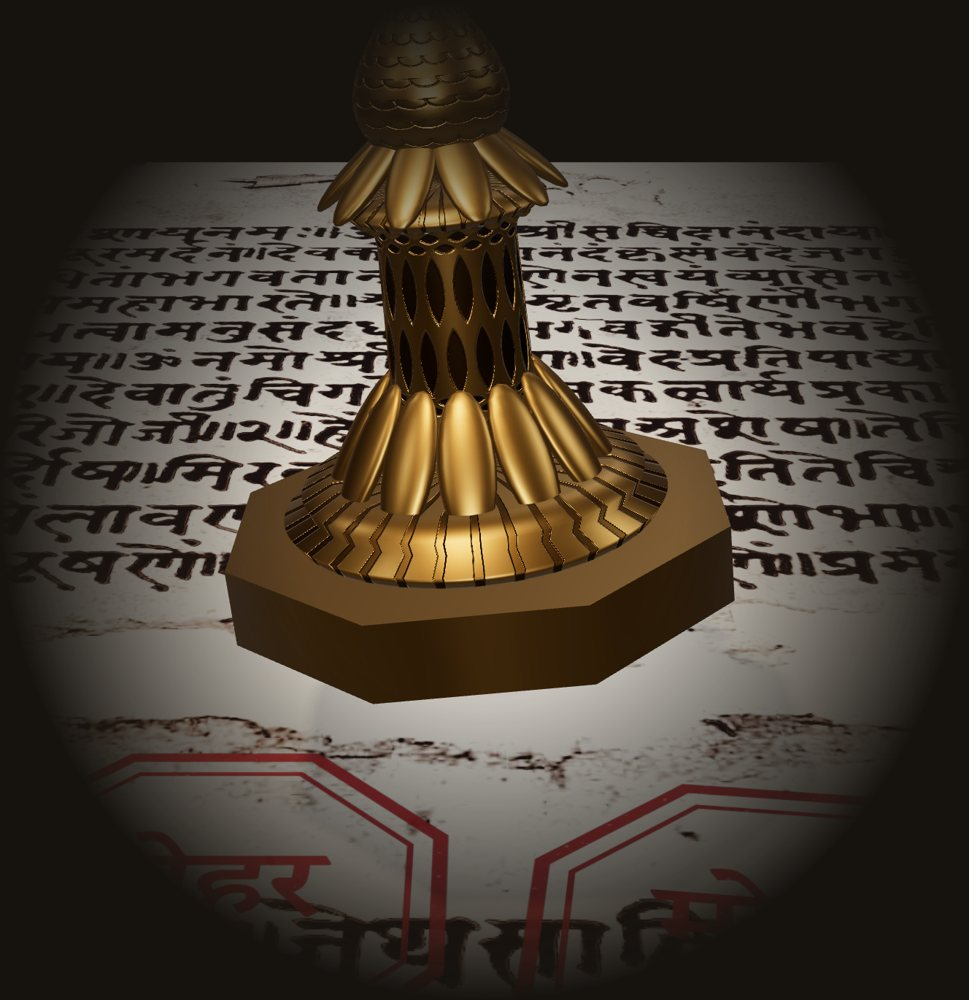
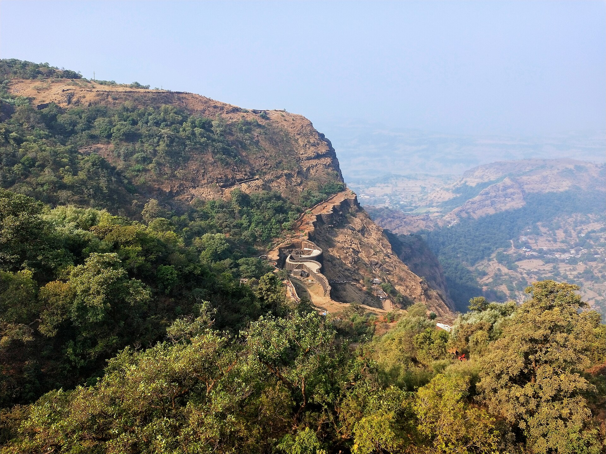
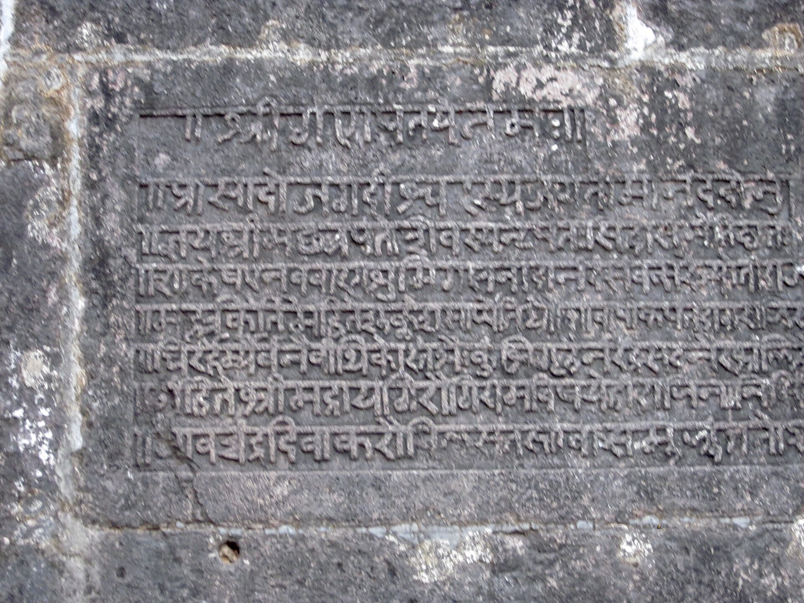
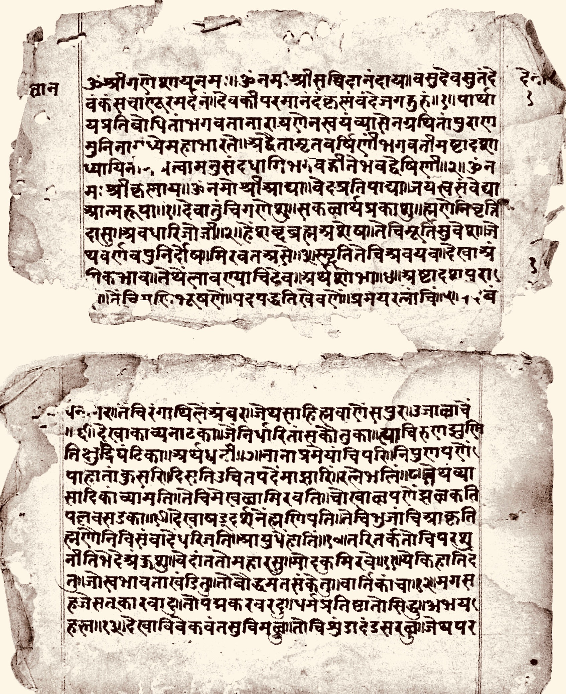

Trust, earned.
Mohar watches what an AI agent does, checks whether the result was right, and turns that record into permission, one capability at a time. One wrong move on a gated capability and the right is gone. Every decision is sealed with a receipt.

Tilt the stamp with your pointer. Click it, or run the agent below, and it presses a receipt.
Run an agent for a week
A simulation of Mohar's rules in your browser. Each task is checked by tests, never by the agent's opinion of itself. Receipts form a real SHA-256 chain; the browser demo has no keys, so it doesn't sign them.
Four rules, kept in code
- Record
- Every action goes into a local hash-chained log, signed with the agent's key.
- Verify
- Tests, diffs, replays or a person accepting the work decide the outcome. A model grading itself never counts.
- Score each capability
- Editing docs and running migrations are tracked apart. Hard gates sit outside the score, so an average can't hide a failure.
- Decide
- Inside earned limits the action runs. Outside them it goes to the right person, with the agent's history attached.


Why a seal
In Maratha administration a letter wasn't an order until it carried the mohar, the seal that said who stood behind it. Mohar does the same for agents: every action carries proof of whose authority it ran under and what the agent had earned at that moment.
The seal on this page is Mohar's own, cut in that tradition: an octagon with a double border, engraved मोहर and ॥ सत्यमेव साक्षी ॥, "truth alone is the witness".

Built to sit beside what you run
Mohar works with the orchestrators, identity providers and policy engines you already run. It's planned to plug into Claude Code hooks, MCP servers, awslabs/cli-agent-orchestrator, Google ADK, Microsoft's Agent Governance Toolkit and Paperclip.
It's early and built in the open. The signed receipt log is the first piece being written, and nothing is production-ready yet.